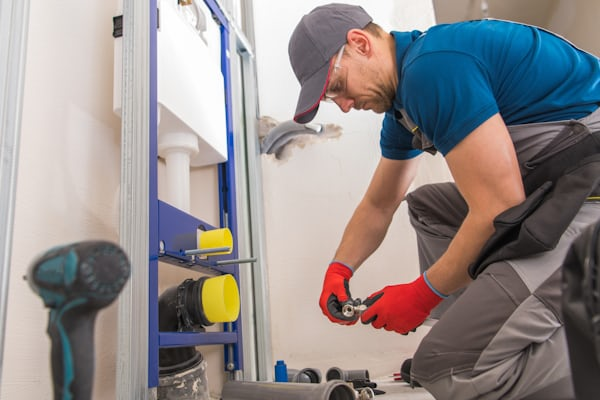
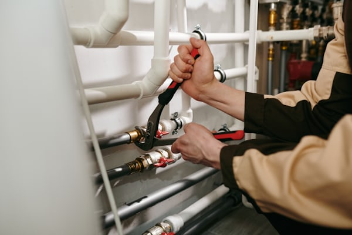

Professional Drain Cleaning
Plumber Near Me helps homeowners with residential plumbing service, repair planning, replacement options, and clear recommendations designed around the way the home is used every day.
Cleaner Flow
Built around practical home plumbing needs.
Practical Diagnosis
Clear guidance for repair, replacement, and planning.
Home Plumbing Focus
A service approach focused on dependable results.
Slow Drains Need Attention
Plumbing problems tend to affect daily routines quickly. When a part of the home stops working the way it should, homeowners usually want clearer answers, dependable service, and a practical next step that fits the property.
This page is designed to make that process easier. Whether the concern is repair, replacement, or a better long-term plan, the goal is to help the homeowner move forward with more clarity and confidence.

Home-Focused Service
Support designed around how the plumbing is used every day inside the home.
Clear Recommendations
The next step should feel easier to understand before any work moves forward.
Repair Or Replace
The service can help when the home needs repair, replacement, or a stronger long-term plan.


Restore Flow With Less Stress
More Confidence At Home
A clear plumbing plan helps homeowners feel better prepared and less reactive.
Stronger Daily Performance
The right service approach helps the plumbing feel more dependable in everyday use.
A Clearer Way Forward
Good service should make it easier to understand the problem, the options, and the next step.
A Smarter Drain Cleaning Plan
Homeowners usually want the same things from a service page: a clearer understanding of the issue, a practical recommendation, and a dependable plan for what happens next.
Review The Need
Start by discussing what the home is experiencing, what part of the plumbing is affected, and what the homeowner wants to solve first.
Confirm The Plan
Clarify whether the better path is repair, replacement, or a more complete improvement plan for the home.
Move Forward With Confidence
The outcome should leave the homeowner feeling more informed, more prepared, and more confident about the condition of the plumbing.
Drain Cleaning Questions
The goal here is to make the service easier to understand before the homeowner reaches out or schedules the next step.
When should I reach out about this service?
Can this page still help if the plumbing issue is not brand new?
What information is helpful before I contact you?
What if I am not fully sure what service I need?
Book Drain Cleaning Help
If the home needs plumbing attention, the next step is to describe the issue and move toward a clearer plan for repair, replacement, or the right service recommendation.